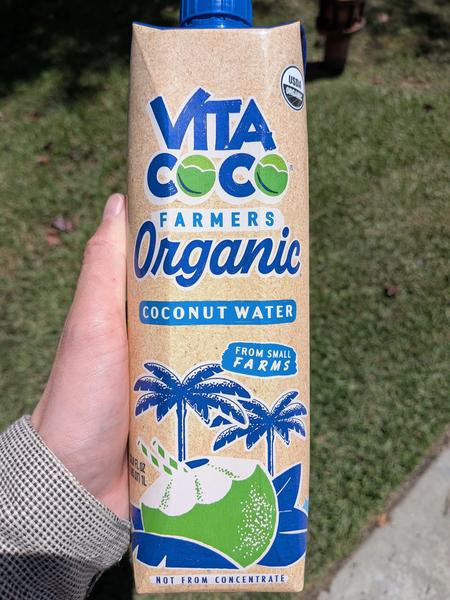

June 2025 · 1 L · Still · Pasteurized · No Added Sugar · USDA Organic · Not from Concentrate
A rare Filipino water — and better ethics than Vita Coco’s standard offering. Although I do love the copy on their website describing this as from ‘hand picked coconuts’. There isn’t a commonly used mechanical way of picking coconuts. They’re virtually all hand picked, organic or not.
A bit lighter than most of the boxed pasteurized coconut waters you might be used to. Lower in natural sugar but still decently sweet. What it lacks in floral or fruity flavors it makes up for in smoothness. There is no bitterness here, and it goes down smooth. Not bad.